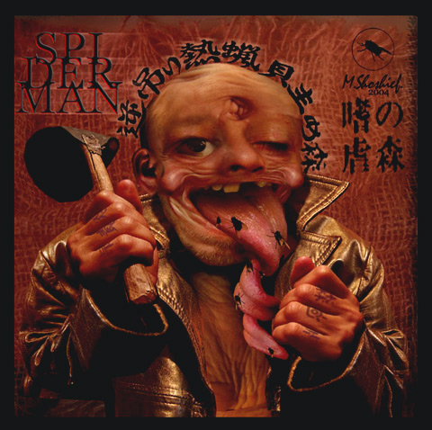
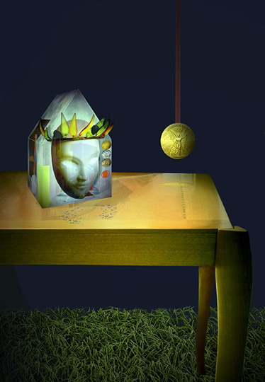
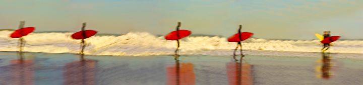
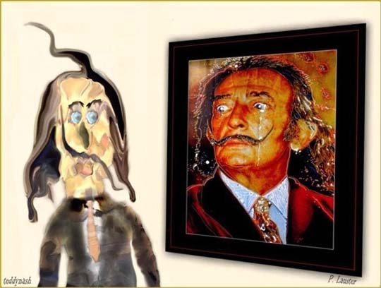
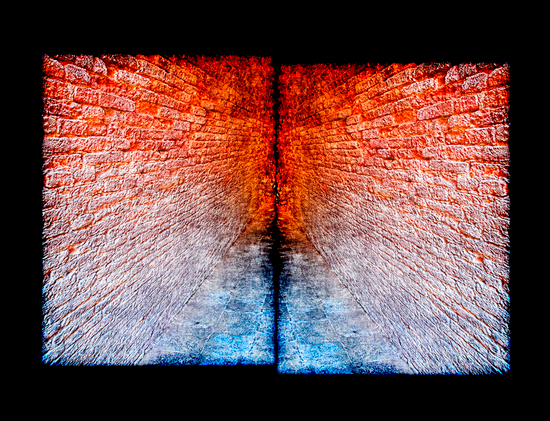
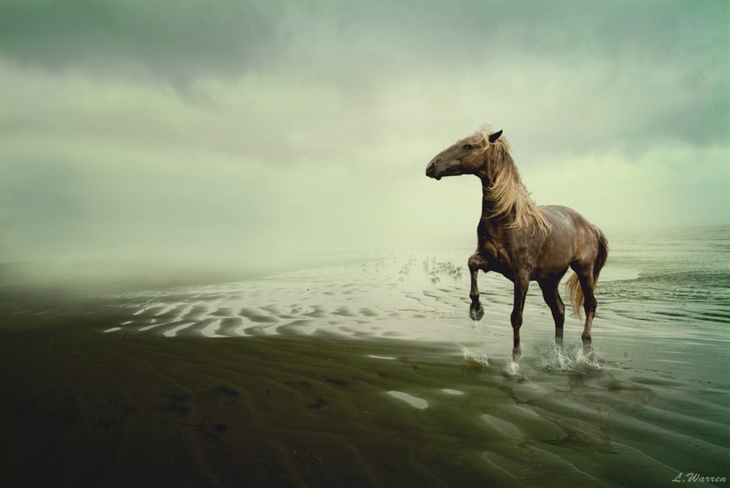

IMAGES OF THE DAY 97
03/01/2024 - 03/10/2024

02/21/2024
Photo-Based
Manipulated Photography
Spider
by Maxim Shoshief
Click image to access artist's full exhibit
02/22/2024
Photo-Based
Damnengine
Whorse
by Dennis Sibeijn
Click image to access artist's full exhibit

02/23/2024
Photo-Based
Studies in Arts and Sciences
Study in Gravity
by Lily E. Smernou
Click image to access artist's full exhibit

02/24/2024
Photo-Based
Documentary Photographic Painting
Red Surfboard
by Karl F. Stewart
Click image to access artist's full exhibit
02/25/2024
Photo-Based
Conceptual Imagery
Harem
by Simon Subrosa
Click image to access artist's full exhibit
02/26/2024
Photo-Based
Photographic Art
In the Field of Passions
by Tantra
Click image to access artist's full exhibit

02/27/2024
Photo-Based
Photoart
#425
by Teddynash
Click image to access artist's full exhibit

02/28/2024
Photo-Based
Photo Digital Art
Pasage
by Vladanovic
Click image to access artist's full exhibit

02/29/2024
Photo-Based
Digital Fine Artworks
Qualia1
by Lindsey Warren
Click image to access artist's full exhibit